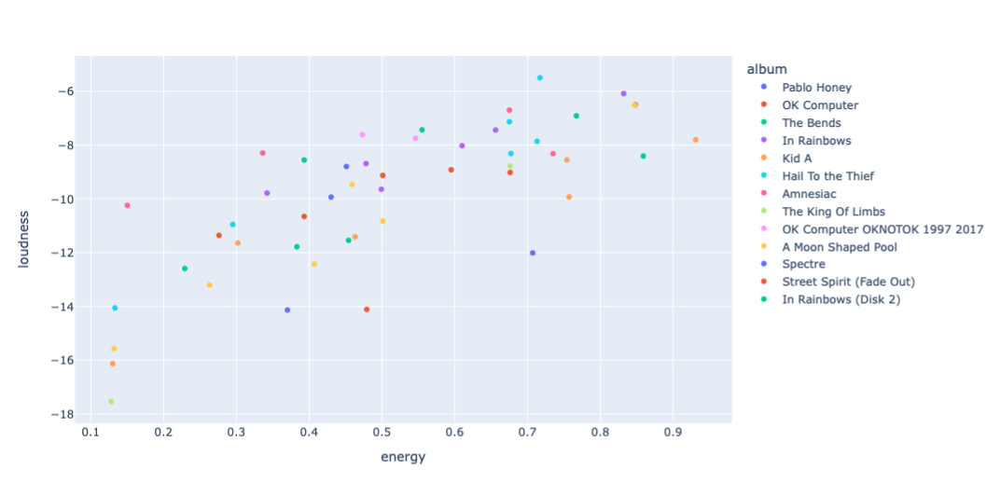
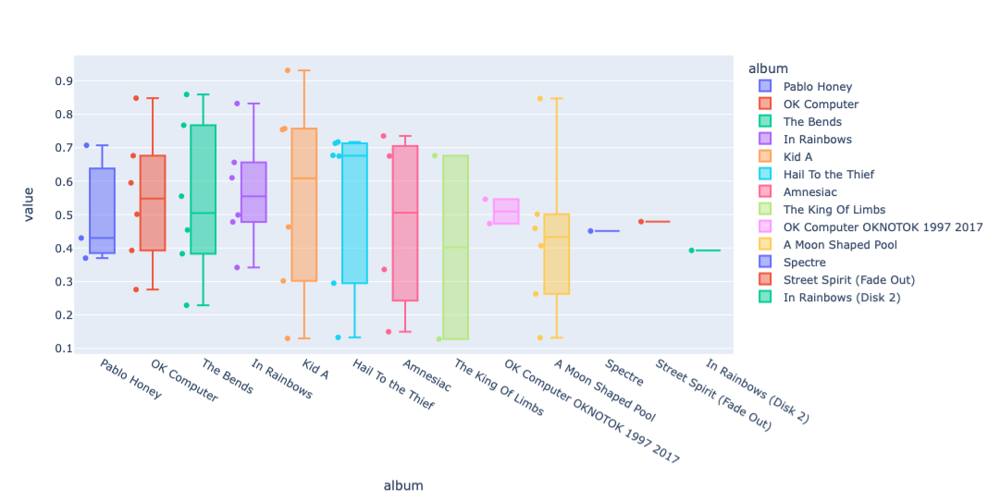
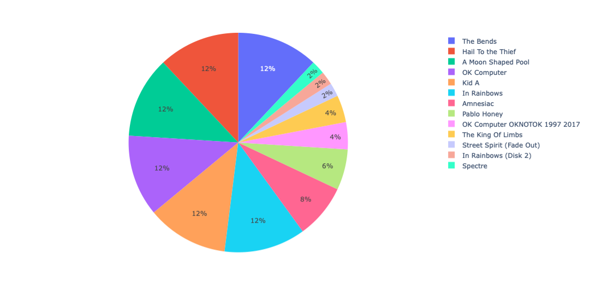
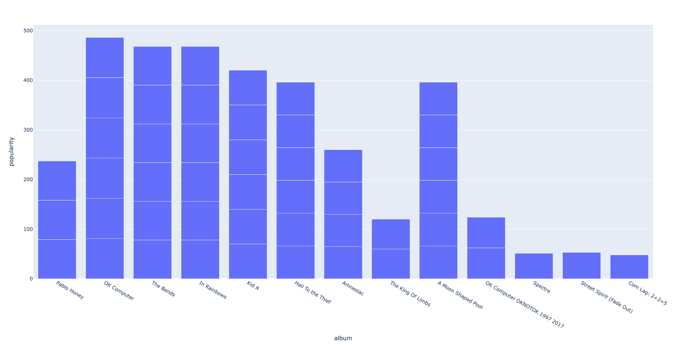

Getting Started
Splotify is a python library for easily graphing and visualizing your Spotify data.


Installation
Install the library by running:
pip install splotify
Usage
First, you need to get your
SPOTIPY_CLIENT_ID,SPOTIPY_CLIENT_SECRET, and redirect uri. Here is a video created by Spotipy that explains how to do so.Declare a SpotifyApi object that allows you to access data from Spotify.
Declare a Data object to store all the songs which you want to plot. You can add individual or multiple tracks, albums, or playlists at a time.
Determine the kind of data you want to plot:
Category plots (bar charts, pie charts) allow you to plot songs by groups (i.e. artists or albums).
Audio feature plots allow you to plot songs by their audio features.
If you need to look up the Spotify ids of tracks, albums, artists, or playlists, you can use search_id (for general searches) or my_id (for user-specific playlists) functions.
Here is an example analyzing Spotify’s “This is Radiohead” playlist:
import splotify.spotifyapi as spotifyapi
import splotify.data as data
import splotify.plots.audiofeatures as af
import splotify.plots.category as c
import splotify.plots.popularity as p
sp = spotifyapi.SpotifyApi(
"YOUR SPOTIPY_CLIENT_ID",
"YOUR SPOTIPY_CLIENT_SECRET",
"YOUR REDIRECT URI",
)
d = data.Data(sp)
# add tracks from the "This is Radiohead" playlist
d.add_playlist("37i9dQZF1DZ06evO2VxlyE")
# view data about the tracks' audio features
afp = af.AudioFeaturesPlot(sp, d, ["energy", "loudness"])
# scatter plot of energy vs. loudness of the tracks in the playlist
afp.scatter_plot_2d(color="album")
# box plot of the tracks' energy values, grouped by album
afp.box_plot(["energy"], groupby="album")
# view data about the tracks' categories
cp = c.CategoryPlot(d)
# pie chart of albums in the playlist
cp.pie_chart()
# view data about popularity
pp = p.PopularityPlot(sp, d)
# bar chart of the popularity of albums in the playlist
pp.album_bar_chart()
This code produces the following plots:    